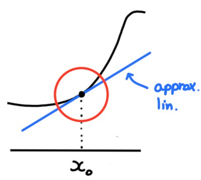

8.5 Dérivée et approximation
On a pour l'instant deux notions de régularité pour une fonction \(f\) au
voisinage d'un point \(x_0\).
-
La continuité:
Si on suppose que \(f\) est
continue en \(x_0\),
\[\lim_{x\to x_0}f(x)=f(x_0)\,,\]
ce qui
implique que les valeurs de \(f(x)\) sont proches de \(f(x_0)\) lorsque \(x\)
est proche de \(x_0\). Ceci fournit
une approximation d'ordre zéro de \(f\) au voisinage de \(x_0\):
\[ \boxed{f(x)\simeq f(x_0)}
\]
-
La dérivabilité:
Si on suppose que \(f\) est dérivable en \(x_0\),
\[
f'(x_0):= \lim_{x\to x_0}\frac{f(x)-f(x_0)}{x-x_0}\,,
\]
ce qui implique que pour \(x\) proche de \(x_0\),
\[
\frac{f(x)-f(x_0)}{x-x_0}\simeq f'(x_0)\,.
\]
On peut isoler \(f(x)\) et obtenir ainsi
une approximation du premier ordre, appelée aussi
approximation linéaire de \(f\) au voisinage de \(x_0\):
\[\boxed{f(x)\simeq f(x_0)+f'(x_0)(x-x_0)}\]

L'approximation à l'ordre zéro revient à approximer \(f(x)\), dans un voisinage
de \(x_0\), par la simple constante \(f(x_0)\).
L'approximation linéaire est plus précise, puisqu'elle tient compte de
comment \(f\) varie au voisinage de \(x_0\)!
Comparons ces approximations sur un exemple simple:
Supposons que l'on veuille calculer \(1.998^4\).
Écrivons \(1.998^4=f(1.998)\), où \(f(x)=x^4\). Ce que l'on aimerait faire est
donc d'estimer la valeur de \(f\) en un point \(x=1.998\) qui est proche de
\(x_0=2\).
- À l'ordre zéro,
\[1.998^4=f(1.998)\simeq f(2)= 2^4=16\,.\]
- Au premier ordre,
\[\begin{aligned} 1.998^4=
f(1.998)&\simeq f(2)+f'(2)(1.998-2)\\
&= 2^4+4\cdot 2^3(1.998-2)\\
&=15.936
\end{aligned}\]
Avec une calculatrice, on trouve \(1.998^4=15.9360959...\).
L'approximation à l'ordre zéro représente donc une erreur d'environ \(0.4\%\),
alors que celle du premier ordre, moins de \(0.001\%\)!
Nous verrons plus tard comment aller au-delà de l'approximation linéaire,
lorsque nous calculerons des développements limités.